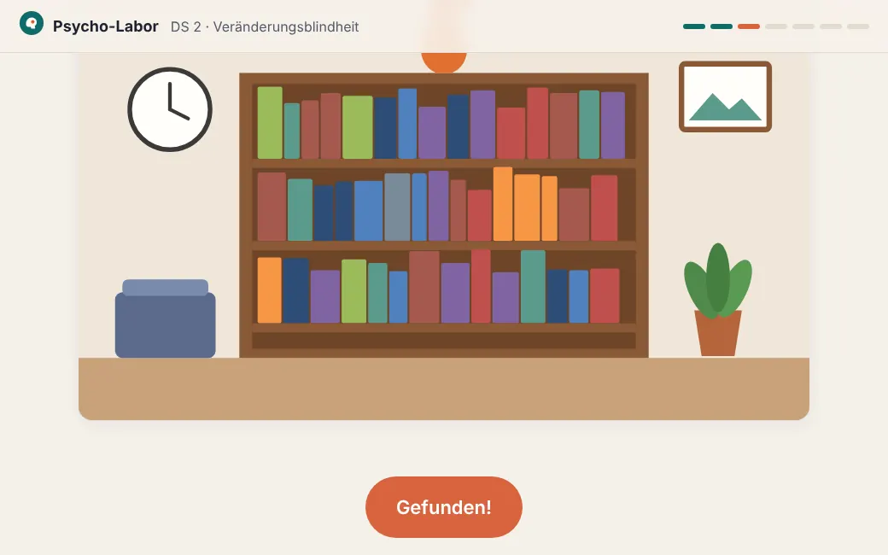

Hilde Digital
Hier probierst du KI für deine Arbeit aus, prüfst digitale Unterrichtsideen und siehst, was Kolleg*innen schon gebaut haben.

KI-Training
KI ausprobieren, gute Anfragen bauen und Ergebnisse prüfen.
KI-Training öffnenDigitaler Unterricht
Ideen finden, Material prüfen und passende Werkzeuge auswählen.
Digitalen Unterricht öffnenGalerieEchte Lernanwendungen aus dem Kollegium ansehen
Arbeitsstand – Einladung zur gemeinsamen Weiterentwicklung.
Was bisher entstanden ist
Gezählt aus den Beispieldaten.
Wie hängen KI-Training und Digitaler Unterricht zusammen?
- KI-Training ist dein eigener Übungsraum. KI hilft dir hier bei der Vorbereitung – auch für Unterricht ganz auf Papier.
- Digitaler Unterricht umfasst mehr als KI. Es geht darum, was Lernende am Gerät besser tun können.
- Beides kann zusammenkommen – muss es aber nicht. Ein Lernangebot, das du mit KI gebaut hast, gehört zum Digitalen Unterricht, sobald die Lernenden damit arbeiten.